dd_dotstore tutorial
A terminal UI for mapping a dotfiles repo onto $HOME and XDG paths. This page walks through install, first launch, and the everyday loop: pick sources, assign destinations, apply as symlinks or copies.
What it is
Point dd_dotstore at a project folder (a git repo of configs is the usual case). The left pane is that tree. The right pane is every destination you have assigned. You apply a plan to create symlinks (LINK) or copies (COPY), undo the last ten actions, and persist the map as .dd_dotstore.json in the project root.
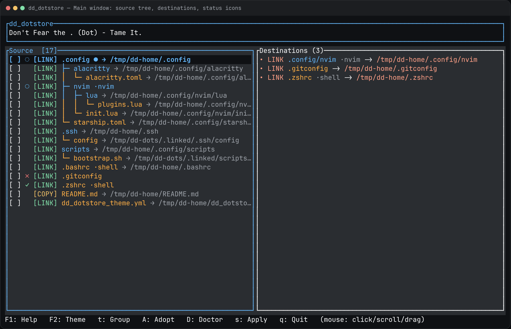
$HOME, or a .linked fallback) until you apply.Status icons on each source row:
| Icon | Meaning |
|---|---|
| ✓ | Destination exists and matches (valid symlink or copy) |
| ○ | Assigned dest is not on disk yet (planned) |
| ✗ | Broken or drifted dest |
| ? | Could not read dest metadata |
| ◌ / ● | Folder is not linked itself, but a descendant is configured |
Install
From GitHub Releases (recommended)
The installer detects Linux x86_64 or aarch64, downloads the matching musl package, puts the binary in ~/.local/bin, and copies the theme to ~/.config/ldnddev/dd_dotstore_theme.yml. Pipe to bash, not sh.
This repository is private, so anonymous GitHub URLs 404. Use a token from gh auth login:
export GITHUB_TOKEN="$(gh auth token)"
curl -fsSL -H "Authorization: Bearer $GITHUB_TOKEN" \
https://raw.githubusercontent.com/ldnddev/dd_dotstore/master/install.sh | bash
# Specific release
curl -fsSL -H "Authorization: Bearer $GITHUB_TOKEN" \
https://raw.githubusercontent.com/ldnddev/dd_dotstore/master/install.sh | bash -s -- --tag v1.6.2
# Install prefix
PREFIX=/usr/local curl -fsSL -H "Authorization: Bearer $GITHUB_TOKEN" \
https://raw.githubusercontent.com/ldnddev/dd_dotstore/master/install.sh | bash
dd_dotstore --helpIf the repo is public, the unauthenticated form works:
curl -fsSL https://raw.githubusercontent.com/ldnddev/dd_dotstore/master/install.sh | bashIf no prebuilt package exists for your machine, the script clones the repo and builds with Cargo (Rust 1.85+). It warns if the target bin directory is not on PATH.
From a source checkout
./install.sh # release build → ~/.local/bin + theme
./install.sh --from-release # GitHub package even from a checkout
./install.sh --debug # cargo build without --release
XDG_CONFIG_HOME="$HOME/.config" ./install.shDevelopment run (no install)
cargo run
cargo run -- --root /path/to/dotfiles
cargo run -- /path/to/dotfiles
cargo run -- --help
cargo run -- --versionFirst run
Launch inside your dotfiles repo, or pass the project root:
cd ~/dotfiles
dd_dotstore
# or from anywhere
dd_dotstore --root ~/dotfiles
dd_dotstore ~/dotfilesThe current directory is the project root unless you override it. Config is written as .dd_dotstore.json next to that root. q quits. Esc never quits — it closes a modal, then clears the filter, then clears checkboxes.
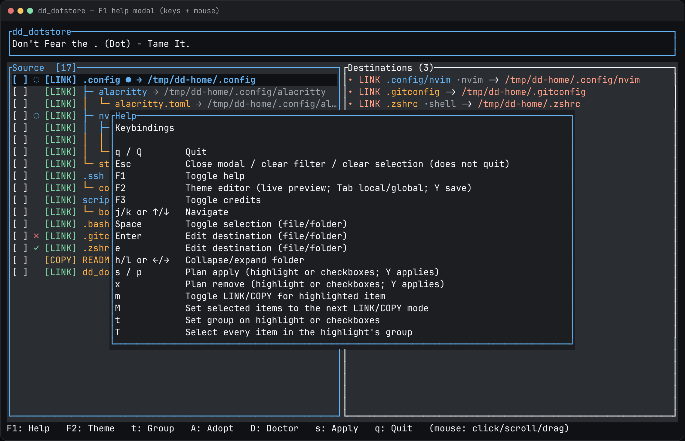
The window
- Header — app name plus a rotating tagline from the theme.
- Source — project tree with checkbox, status, [LINK]/[COPY], name, optional group, optional dim dest.
- Destinations — assigned mappings only. Click a row to jump to it in the source tree.
- Footer — width-adaptive key hints.
- Toasts — passive notices, bottom-right, five seconds (click to dismiss).
Navigate with j/k or arrows. h/l (or left/right) collapse and expand folders. r reloads the tree (dests and modes survive; expand state resets).
Assign destinations
Highlight a file or folder and press Enter or e. The destination browser starts at $HOME. Type to fuzzy-filter, ~ jumps home, g/G jump ends of the list, Ctrl+S selects the current directory as the dest.
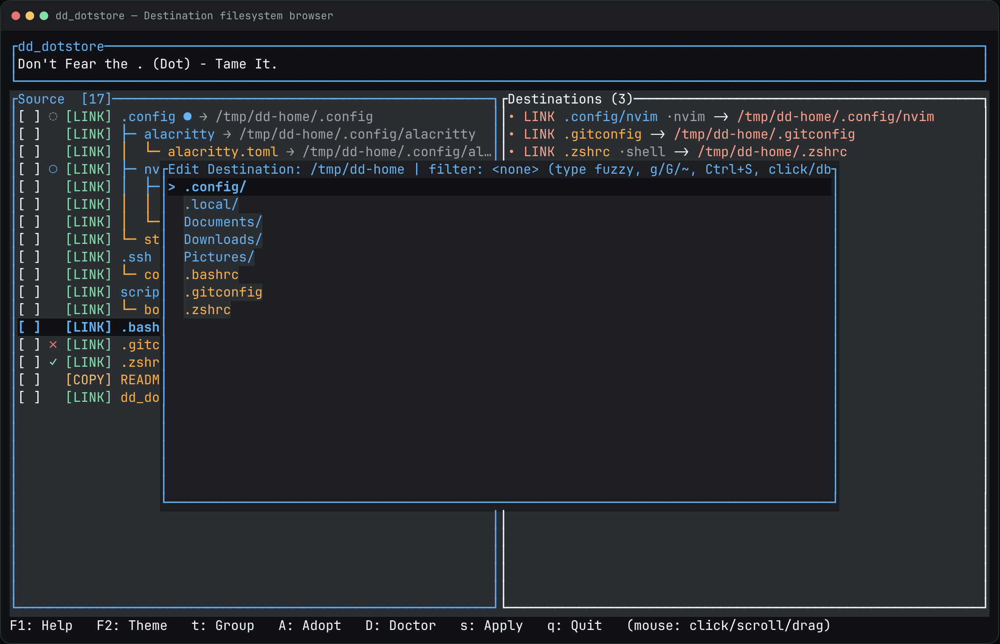
You do not have to pick a dest before apply. Unassigned rows already show a dim default:
.config/nvim→$XDG_CONFIG_HOME/nvim(usually~/.config/nvim)- A top-level folder like
nvim/→~/.config/nvim - A top-level file like
.zshrc→~/.zshrc - Anything nested that does not match those rules →
project/.linked/<path>, labeled[fallback: .linked]in the plan..linkedis ignored as a source.
Apply, copy, undo
Highlight is enough. Checkboxes, if any, win over the highlight. s or p opens the same Plan dialog. Y applies; any other key cancels.
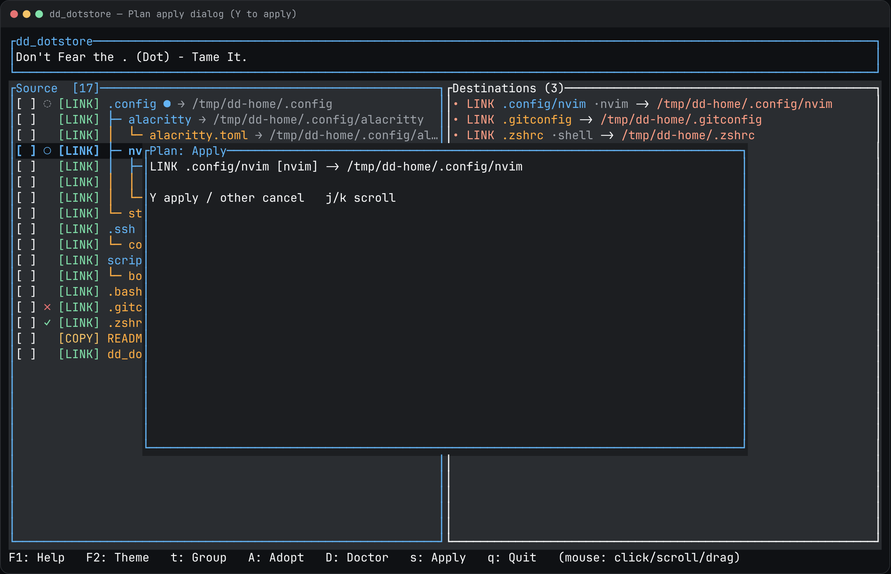
m toggles LINK/COPY on the highlighted row. M sets every checked item to the next mode. Copies are for files you do not want as a live symlink (a script you will edit in place, a binary, and so on).
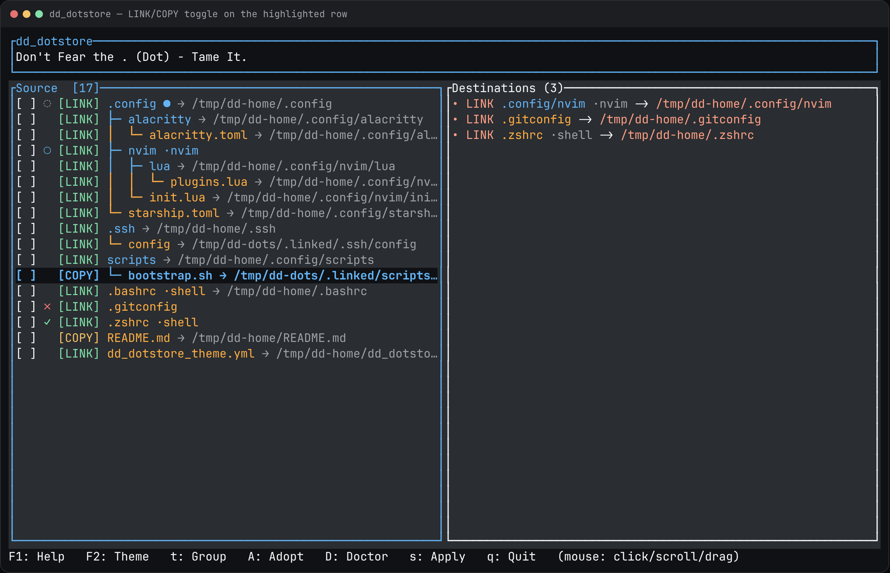
If a destination is a real file or directory (not already your symlink), apply opens an overwrite warning. Directories named in that list will be deleted with remove_dir_all.
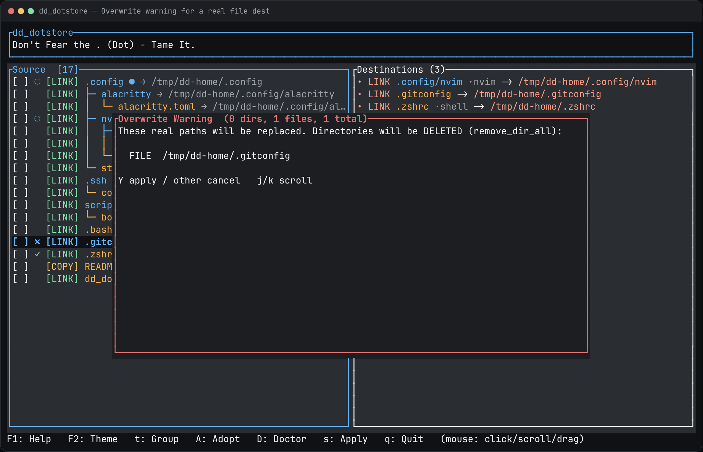
x plans a remove. It never guesses a dest: only assigned destinations are removed. u undoes the last action (cap 10, persisted).
Groups and filter
t sets a group name on the highlight or on every checked item (empty name clears). T checks every item that shares the highlight’s group, so a package like nvim or shell applies in one plan.
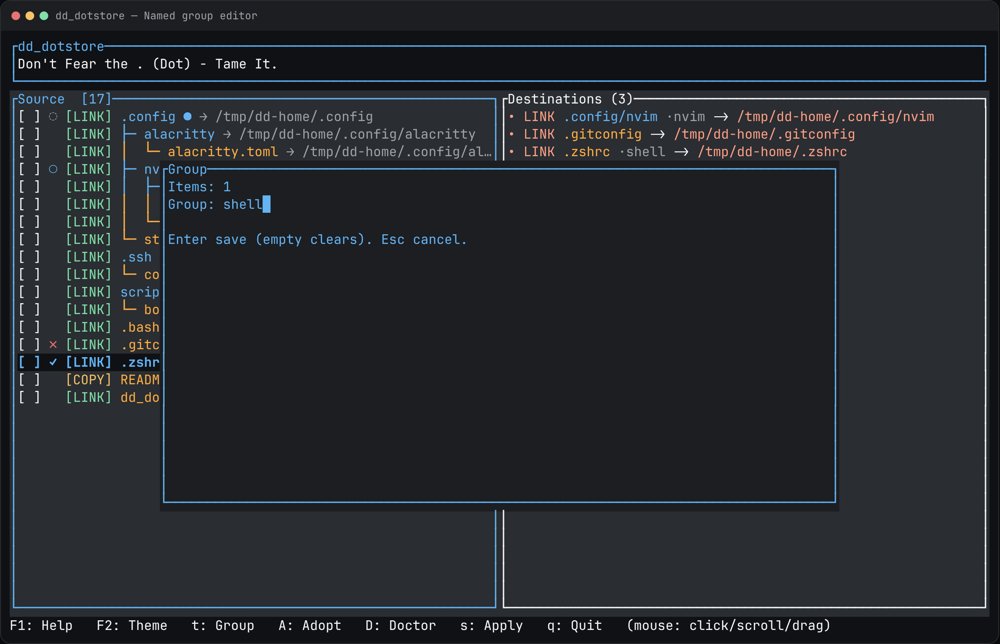
.dd_dotstore.json and show as ·shell on the source row.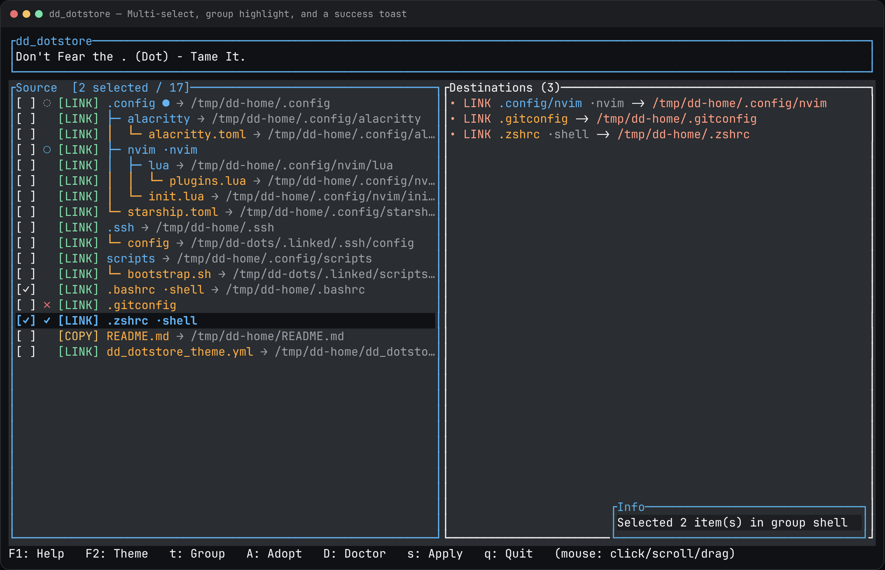
.zshrc selected both shell items. The toast is informational and disappears after five seconds./ focuses an inline filter in the Source title. It does not clear an existing query. Nested matches auto-expand; unmatched folders hide. The filter also matches group names. Esc while editing restores the previous query.
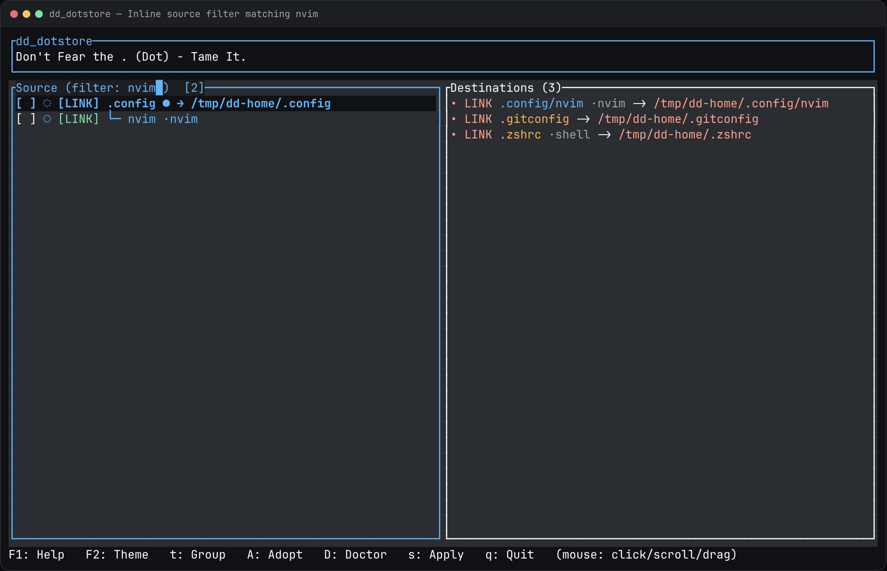
nvim keeps the folder path so you still see where the match lives.Adopt and doctor
If you already linked files by hand, A scans $HOME and XDG for symlinks that point into this project and are missing from the map. Space toggles, a selects all, Y adopts.
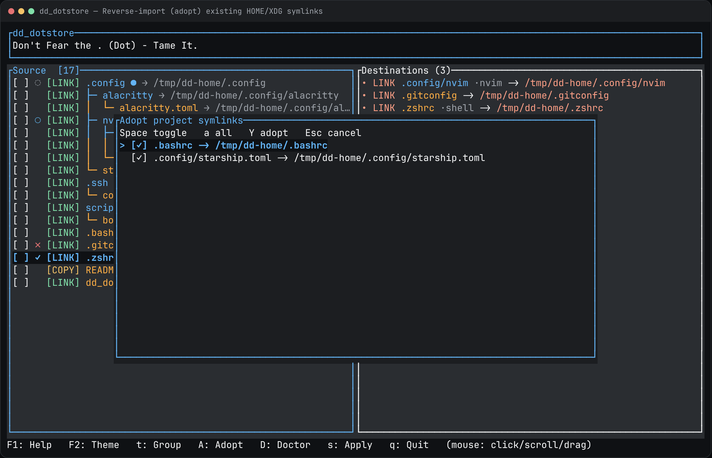
D opens Doctor: broken/drifted dests, planned-but-missing dests, unknown metadata, and orphan project symlinks not in config. Enter jumps to the source row; A from Doctor adopts orphans.
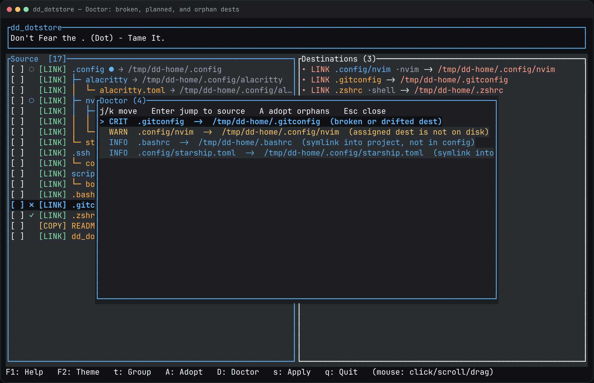
Theme and ignore
Theme lookup: ./dd_dotstore_theme.yml, then $XDG_CONFIG_HOME/ldnddev/dd_dotstore_theme.yml, then built-in defaults. Files must declare version: 1 and every canonical color as #RRGGBB. A bad file falls back to built-in and warns; F3 shows the active source (local / global / default).
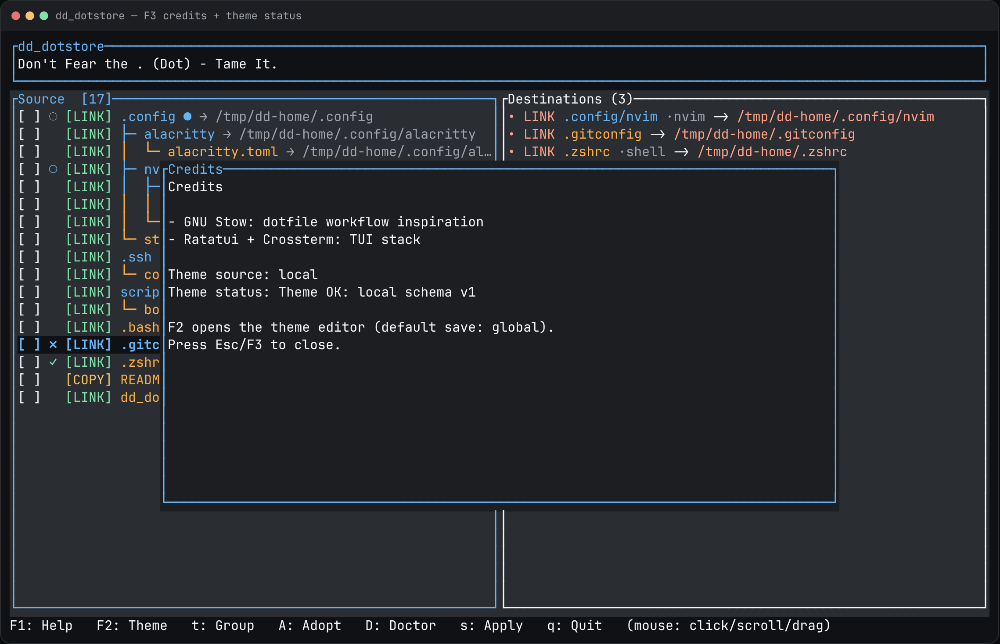
F2 is a live editor. Tab switches save target (global is the default). Y writes YAML, R resets colors, Esc reverts unsaved edits. A local file still wins lookup after a global save.
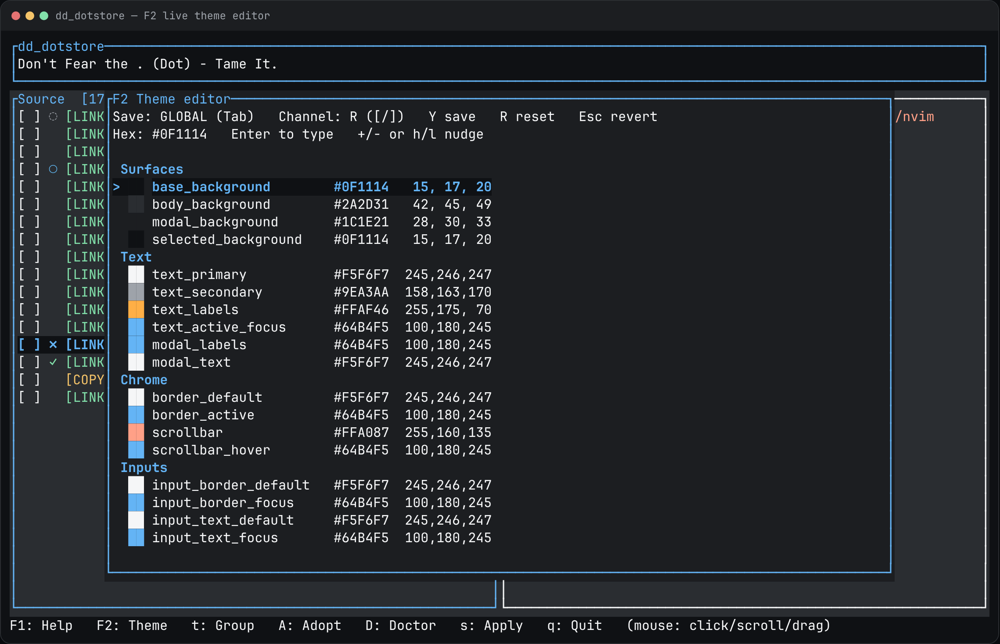
I edits ignore patterns (list / add / delete). Defaults hide .git, node_modules, target, __pycache__, .dd_dotstore.json, .DS_Store, and .linked. An empty list disables those defaults.
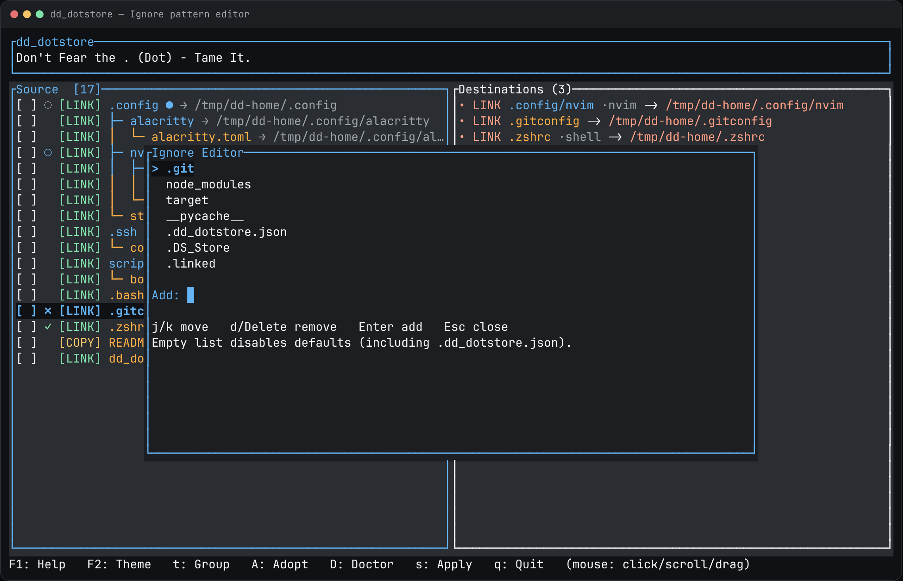
Keys and mouse
Main
| Key | Action |
|---|---|
| q / Q | Quit |
| Esc | Close modal / clear filter / clear selection (does not quit) |
| F1 F2 F3 | Help / theme editor / credits |
| j k arrows | Move |
| Space | Toggle checkbox |
| Enter / e | Edit destination |
| h l | Collapse / expand |
| s / p | Plan apply |
| x | Plan remove |
| m / M | LINK/COPY on highlight / on selection |
| t / T | Set group / select group |
| A / D | Adopt / doctor |
| u | Undo |
| / | Filter |
| I i E | Ignore / import / export |
Mouse
- Click a row to move the highlight; far-left click toggles the checkbox.
- Click the tree connector on a folder to expand or collapse.
- Shift-click range-selects from the current highlight.
- Double-click the name to edit the destination.
- Wheel scrolls the pane under the cursor (Shift = faster). Drag the scrollbar too.
- Click a Destinations row to jump (ancestors expand as needed).
- Click outside a modal to cancel. Confirm/overwrite/plan still require Y.
Import/export live under ~/.dd_dotstore/exports/. The import picker lists newest first.
Config files
| Path | Role |
|---|---|
.dd_dotstore.json | Per-project map: dests, modes, groups, ignores, undo history |
./dd_dotstore_theme.yml | Local theme (wins lookup) |
$XDG_CONFIG_HOME/ldnddev/dd_dotstore_theme.yml | Global theme (installer default) |
~/.dd_dotstore/exports/ | Exported configs |
Requires a Unix-like OS (symlinks) and Rust 1.85+ if you build from source. Idle auto-save is 300 ms after the last mutation; apply/undo/import/ignore flush immediately.
Uninstall
export GITHUB_TOKEN="$(gh auth token)"
curl -fsSL -H "Authorization: Bearer $GITHUB_TOKEN" \
https://raw.githubusercontent.com/ldnddev/dd_dotstore/master/install.sh | bash -s -- --uninstall
# From a source checkout
./install.sh --uninstallRemoves the installed binary and ~/.config/ldnddev/dd_dotstore_theme.yml. The ldnddev directory is removed only if it is empty. Project .dd_dotstore.json files and your actual dotfiles are left alone.
Updating screenshots
Every PNG on this page is generated from the live TUI, not hand-drawn. When the UI changes, regenerate them:
./docs/capture.shThat script:
- Builds a throwaway fixture under
/tmp/dd-dotsand/tmp/dd-homeso dest paths stay short and your real$HOMEis never scanned. - Drives
examples/tutorial_shots.rsthrough each scene and writes HTML frames todocs/images/_frames/(gitignored). - Screenshots those frames with Playwright + Chromium into
docs/images/*.png. - Fails if
docs/index.htmlreferences a PNG that was not produced.
To add a shot: append a capture(...) call in the example, document the id in docs/README.md, reference images/<id>.png here, then re-run ./docs/capture.sh.
Full capture notes — required tools, shot catalog, and how to change the fixture — live in docs/README.md.